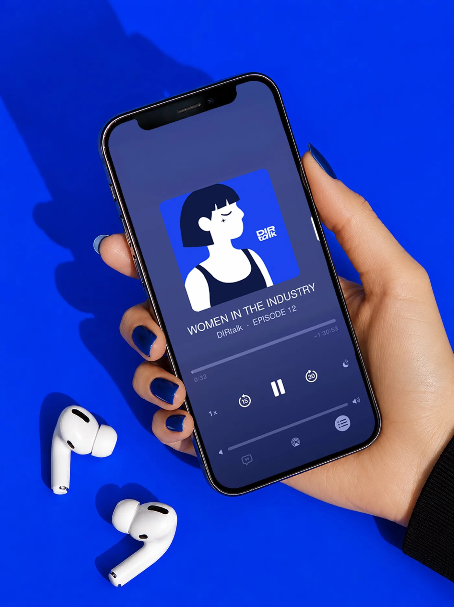
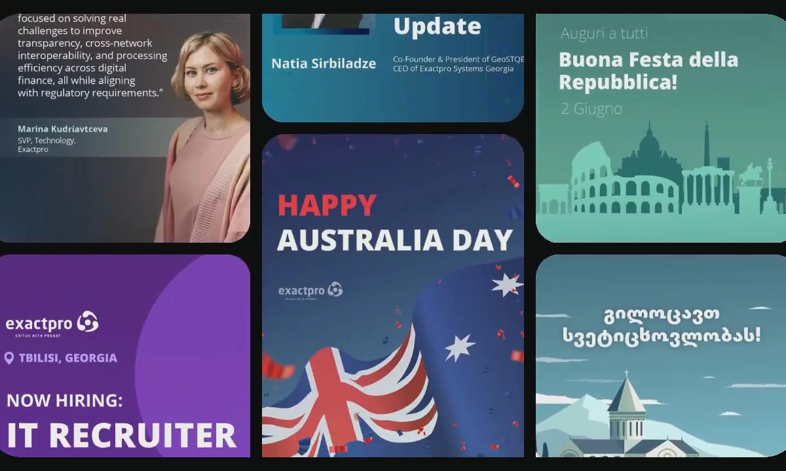

Loading portfolio
Maria Danilova
1
100
The Gallery
Posters & Editorial System — 2025–2026
6 exhibitions · community grew to 10,000+ followers
Helikon Art Center
Web Design, Cultural Platform — 2025
Murabex
Web Design, UI/UX & Illustration — 2026
Landing page, platform interface & original illustration system

DIRTALK Brandbook
Brand Identity, Editorial System — 2025
Content shares grew 2x in the first 3 months
Yufiko
Event Posters, Social Media — 2025–2026

Exactpro
Campaign Graphics, Illustration — 2022–2026
One template system across five country calendars